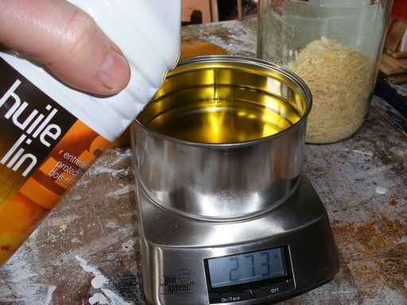

UFR Sciences de Santé - université de Bourgogne - Page d'accueil -
 Aller au menu Aller au contenu Aller à la recherche UFR, instituts, écoles Recherche ENT Contact Plans Bibliothèques Boutique Accès rapide : CUFPA (ex Taxe d’apprentissage) Anglais médical Centre de simulation en santé (USEEM) votre UFR Accès / Transports Organigramme Organisation Formation Initiale PASS / PACES Études médicales Études pharmaceutiques Masters Dépt. de Maïeutique Dépt. de Médecine Générale Deuxième Cycle Cours théoriques Stages DMG Troisième cycle DES de médecine générale Formation pratique Formation théorique Thèse Scolarité CESP Droit au remords École INSERM UE Optionnelles et Recherche Passerelles Recherche Vie étudiante Associations Prix et bourses Tutorat des Etudiants de santé de Dijon (TED) Formation ContinuePAGE D’ACCUEIL
Accueil
Formation initiale
PASS / Paces études médicales Pharmacie Masters Maïeutique Médecine généraleActualités
mars 2021L’Hôpital des Nounours est maintenu
mars 2021La réforme de l’entrée des études de santé
février 2021Élections au Conseil de composantes
+ d actualitésAgenda
24 Juin. au 25 Juin.Colloque Vie psychique à l’hôpital
Maison des Sciences de l’Homme (MSH) Dijon Tout l'agendaScolarité
Formalitésadministratives Emplois
du temps Stages UE optionnelles
Groupes TD/ED Examens Contacts
Tutelles / Partenaires
Centre Hospitalier
Universitaire
Dijon Bourgogne
Centre Georges
François Leclerc
USEEM
Centre de
Simulation en Santé
Vie étudiante
Servicesétudiants Associations
étudiantes Aide
financière
Suivez
l'UFR Sciences de Santé
sur les réseaux sociaux
Sur LinkedIn Sur Facebook kc_data: a:8:{i:0;s:0:"";s:4:"mode";s:2:"kc";s:3:"css";s:0:"";s:9:"max_width";s:0:"";s:7:"classes";s:0:"";s:9:"thumbnail";s:0:"";s:9:"collapsed";s:0:"";s:9:"optimized";s:0:"";} kc_raw_content: Université de Bourgogne
Maison de l'université
Esplanade Erasme
BP 27877 - 21078 Dijon cedex
FRANCE
Tél. : +33 3 80 39 50 00
Fax : +33 3 80 39 50 69
Coordonnées et contact
Télécharger le plan des campus
Accès rapide
UFR, instituts, écoles Recherche ENT Contact Plans Bibliothèques BoutiqueVous êtes
CUFPA (ex Taxe d’apprentissage) Anglais médical Centre de simulation en santé (USEEM)Log In
Lost your password? Create an accountCe site utilise des cookies afin de vous fournir une meilleure expérience d'utilisation.
Préférences de confidentialité J’approuveOK